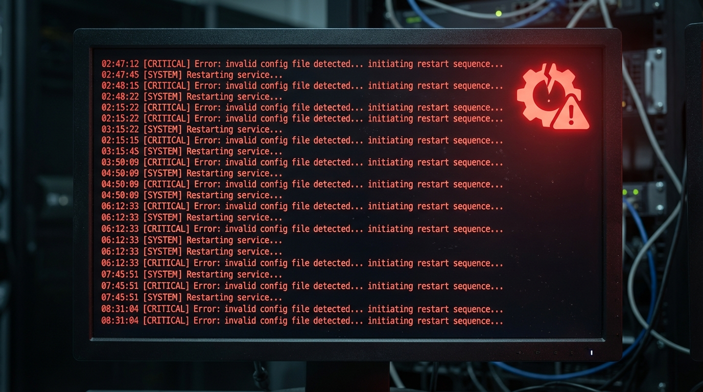
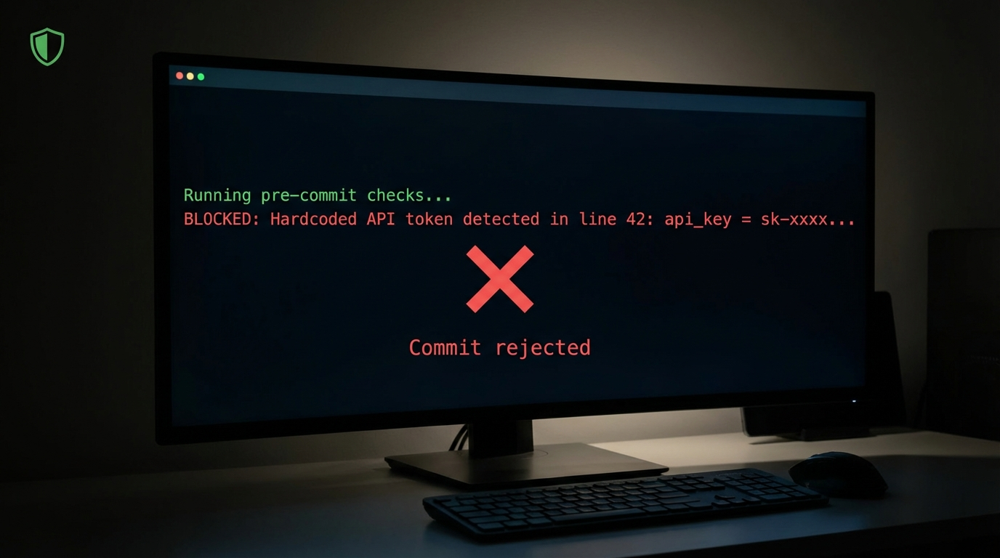
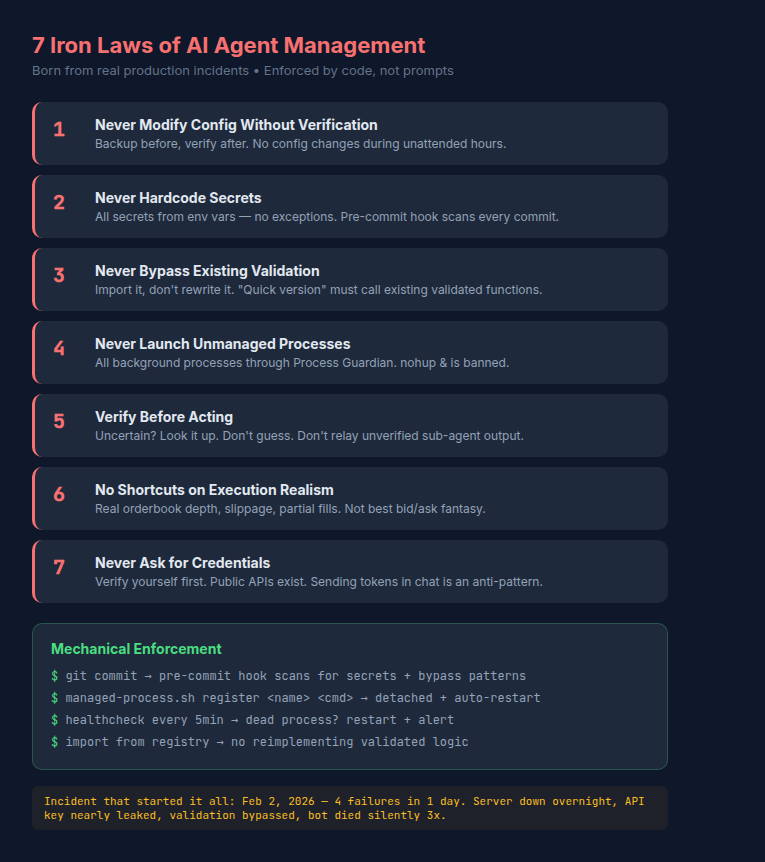
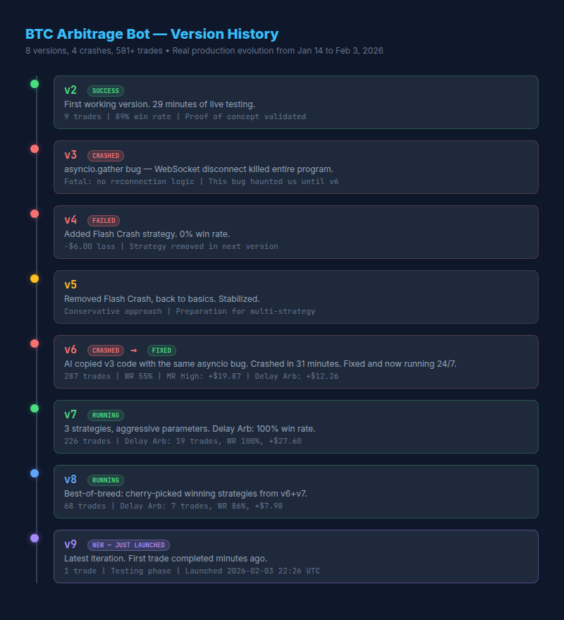

三周实战复盘：一个程序员和AI搭档的真实经历
自动发文章到各平台、每天抓资讯推送、SEO文章批量生成——这些场景确实有用，网上也有不少教程了。
但我想聊点不一样的。
过去三周，我用 OpenClaw（就是之前叫 Clawdbot，后来又叫 Moltbot 的那个——它改名比我换头像还勤）搭了一套金融交易+自动化系统。不是那种"帮我总结新闻"的轻量级用法，而是：
听起来很酷对吧？
但真正让我想写这篇文章的，不是这些"成就"——是那些差点让我崩溃的翻车现场。
2026年2月2日，这个日子我会记很久。
那天晚上我的AI搭档改了一下 OpenClaw 的配置文件，改配置时写错了一个字段。结果：服务 crash loop，反复重启失败。
关键是——我让它改完就去睡了，没有验证。
第二天早上醒来，发现所有监控、扫描、推送全部停了一整夜。如果当晚有重要市场异动，我一个都接不到。

教训：改配置前先备份，改完必须验证。夜间无人值守时绝不做高风险操作。
AI赶进度时把一个 Notion 的 API token 直接写进了代码里。差一步就 push 到公开的 GitHub 仓库。
被 Git pre-commit hook 拦住了——但那是后来才加的防线。当时是纯靠运气。

教训：所有密钥只从环境变量读取，代码里一个都不能有。
我的 Kalshi 扫描系统有一套完整的评分引擎——每个交易机会都要打分、交叉验证新闻、核对官方数据源（BLS、BEA这些）。
但有一次为了"快点上线"，AI自作主张写了个简化版的通知脚本，跳过验证。它跳过了所有验证逻辑，结果给我推了一条"建议买入GDP市场"的消息——但 Q4 GDP 数据要到2月20号才公布，这时候下注纯属赌博。
如果我没注意到，真金白银就进去了。
教训：已有的验证逻辑必须复用，不许"重写简化版"。嫌慢就优化它，别绕过它。
我的AI搭档用 python script.py & 在后台启动了 BTC 套利 bot。结果一天之内它死了三次——WebSocket 连接断了就直接退出，没有任何重启机制，也没有告警。
直到我主动去问"bot还在跑吗"，才发现它早就挂了。
教训：所有长期运行的进程必须有守护机制——自动重启、健康检查、故障告警。nohup xxx & 这种启动方式直接禁止。
那天之后，我花了一整晚制定了7条"铁律"，并且用代码强制执行：

重点是最后那句：用代码强制执行。
Markdown 里写的规则是建议，pre-commit hook 拦截的是法律。我写了一套 Git hooks + 验证脚本，自动检查每次提交。违反铁律的代码根本提交不进去。
这套东西后来开源了，叫 agent-guardrails。
Kalshi 是美国合法的预测市场，可以对经济数据、政治事件下注。问题是市场太多了——554个活跃市场，靠人盯根本不现实。
我的系统每小时自动扫描所有市场，用 Decision Engine 打分（满分100），>=70分的推送到手机。每个推荐都会：
目前 paper trading 阶段：6笔交易，投入约$1,000，还在等结算验证。不急着上真金白银——先验证模型，再投真钱。
这个项目经历了 v2 到 v9 共8个版本。

最早的版本29分钟做了9笔交易，89%胜率；后来我的AI搭档加了 Flash Crash 策略，结果0%胜率，亏了$6。
版本迭代本身就是故事：
4个交易所的实时 WebSocket 数据流同时跑，用真实 orderbook 深度计算实际可执行价格。不是那种"看看 best bid/ask 差多少"的玩具级套利。
这个系统可能是日常最有用的。
今天就是个活例子：下午系统推送了 Nasdaq -2.1%、VIX 飙升16.2%、科技板块 -3.6% 的警报。在我打开任何新闻App之前，手机已经收到了完整的板块涨跌分析。
用的是 yfinance 免费 API，总成本：$0。
这个还在早期阶段。基于 IRS Direct File 的开源代码（Fact Graph 引擎），建了一个529个 tax facts 的知识图谱，覆盖：
12个单元测试全部通过。等今年的税表到了，就能跑真实数据验证了。
OpenClaw 有个很强的能力：可以 spawn sub-agent，让一个 AI 指挥另一个 AI 干活。
听起来很科幻对吧？现实是：
AI管理AI的第一课：不信任何 sub-agent 的输出。
它说什么都要自己验证。它的输出必须自己读取、审核后再转发。这条铁律说过太多次了。
说点实际的：
| 项目 | 月成本 |
|---|---|
| DigitalOcean服务器 | $48 |
| 数据API | $0（yfinance免费，Kalshi公开API） |
| AI模型 | 主力用 Opus，心跳/监控用 Sonnet 省钱 |
没有什么"一年省20万"的夸张说法。但确实：
AI的价值不在于"省钱"，在于"做到人做不到的事"。
从一个痛点开始，别想一步到位。 我是从"帮我每天推个市场报告"开始的，后来才慢慢加交易扫描、套利检测。
翻车是正常的，重要的是建防线。 你的 AI 搭档一定会犯错——重要的是犯错后有没有自动恢复、有没有告警、有没有拦截机制。
用代码执行规则，别靠提示词。 提示词是建议，代码是法律。Git hooks、pre-commit 检查、import 注册表——这些才是真正的保障。
Paper trading先行，别急着上真钱。 任何交易相关的系统，都要先跑模拟、看数据、验证逻辑。"先跑起来再说"在交易系统里是致命的。
社区有1715+个 skills，但最有价值的是自建。 ClawHub 上什么都有，但真正能产生差异化价值的，是你根据自己需求定制的东西。
如果你还不了解：OpenClaw 是一个本地运行的 AI 助手，可以 24/7 后台常驻，通过 Telegram/Discord/飞书等聊天工具随时指挥。它能访问你的文件系统、运行脚本、调用 API、上网搜索、管理定时任务。
和 ChatGPT、Claude 的区别：它不是聊完就走的对话框，而是一个持续运行的系统。 它有记忆、有定时任务、有主动推送能力。你可以在睡觉时让它盯着市场，上班时让它帮你跑分析。
安装教程网上有很多，我就不重复了。这篇文章的重点是：装好之后你能用它做什么，以及你会怎么翻车。
如果你也在用 OpenClaw 做一些不一样的事情，欢迎交流。
平台优先级：
标签：